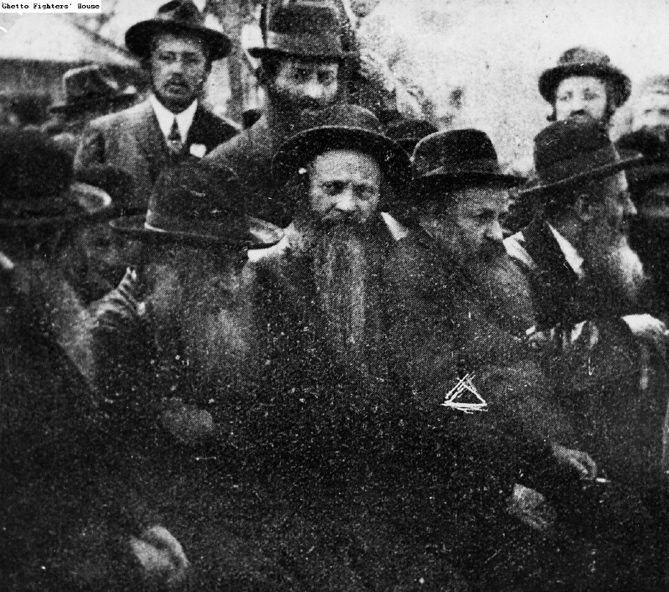
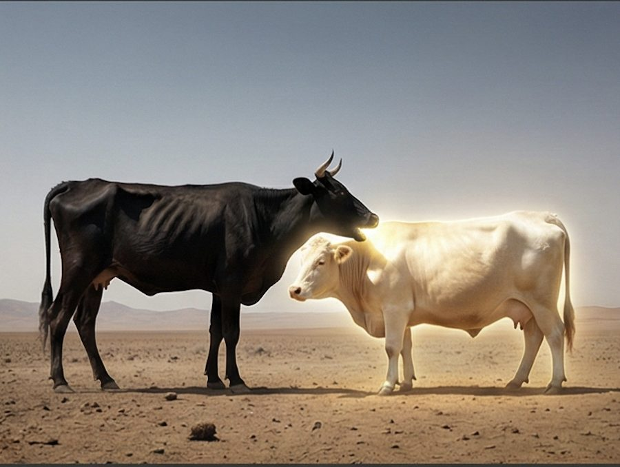
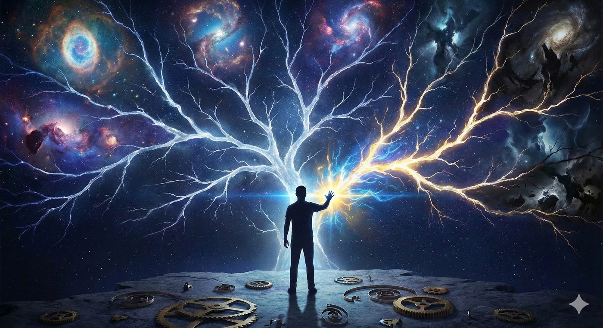
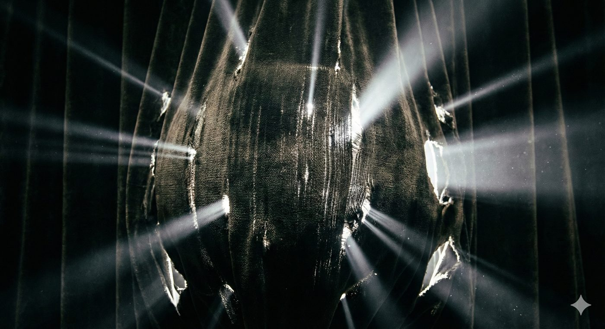
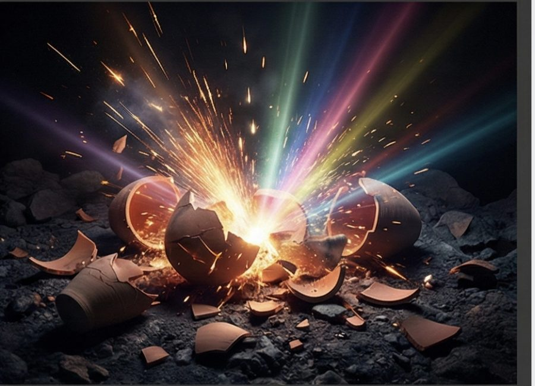
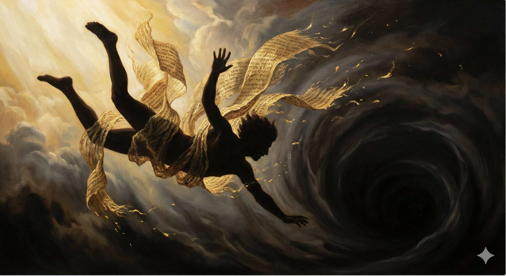
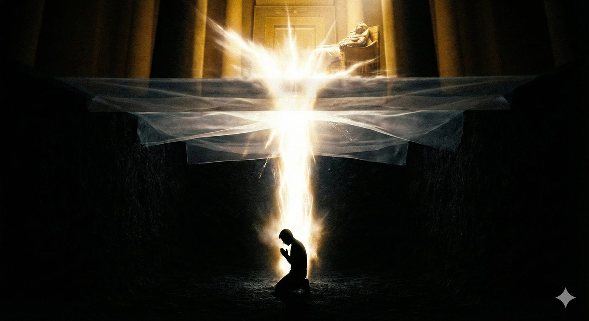
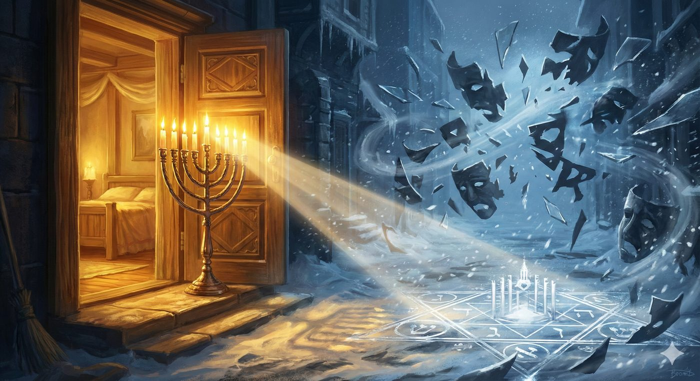
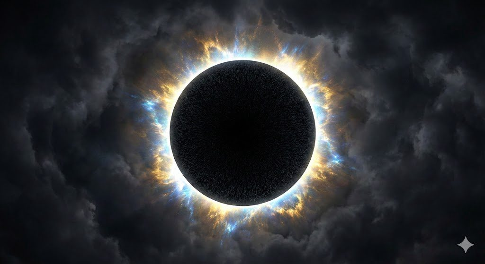

Miketz Hanouka 5786
L’obscurité supralumineuse
La paracha de Miketz, qui relate l’émergence de Yossef depuis la prison la plus obscure jusqu’au sommet du pouvoir égyptien, coïncide presque invariablement avec la fête de Hanouka, célébration de la lumière au cœur de la nuit la plus longue de l’année.
Cette rencontre n’est pas seulement symbolique. Elle est ontologique et révèle une vérité profonde et dérangeante de la Torah : la lumière véritable ne naît pas malgré l’obscurité, mais à travers elle, depuis elle, Miketz : depuis le ketz, depuis la fin.
C’est cette idée que cette modeste étude se propose d’explorer, avec l’aide du Ciel, de nos maitres et en particulier de l’école hassidique d'Izhbitza-Radzin. Fondée en Pologne Au XIXe par Rabbi Mordehai Yossef Leiner (auteur du Mei HaShiloach) et développée par son fils, Rabbi Yaakov Leiner (auteur du Beit Yaakov), cette dynastie a proposé une lecture radicalement nouvelle de l’obscurité et en a fait une thématique de leurs écrits et de leurs approches de la torah et du judaïsme.

Nous essayerons de présenter leur théorie fondamentale :
L’obscurité n'est pas un obstacle à la Rédemption (Guéoula), mais son vecteur nécessaire et, à bien des égards, un état spirituel supérieur à la lumière révélée.
L'analyse mettra en lumière la supériorité paradoxale de l'obscurité, comprise comme le lieu de la "Lumière Cachée" (Or HaGanuz) et des "Lumières de Tohu", et la nécessité impérative de traverser l'épaisseur de la nuit pour atteindre une Geoula authentique et totale.
Nous traiterons également de Hanouka sous l’angle de la fête qui illumine l’obscurité et qui permet pendant un temps limité quelques jours de découvrir que l’infini n’attend que d’être dévoilé.
La nature de l’obscurité
Lumière et obscurité dans la pensée mystique juive
Dans le vaste panorama de la pensée mystique juive, la dialectique entre la lumière (Or) et l'obscurité (Hosheh) constitue un axe central de réflexion.
Le réflexe humain : Vouloir chasser l'obscurité pour retrouver le confort.
Traditionnellement, la lumière est associée à la révélation divine, à la clarté intellectuelle et à la rectitude morale, tandis que l'obscurité est perçue comme un voilement de la présence divine, le domaine de l'impureté, une rétractation du divin, ou mieux une épreuve à surmonter.
Nous serions dès lors naturellement et humainement tenter de vouloir « chasser » l’obscurité, de rallumer la lumière, pour pouvoir s'éloigner de ce domaine dont les rouages sont impossibles à comprendre et difficile à vivre. Nous voudrions voir les mitsvots, la torah, l’allumage des nerots de hanouka comme une ultime tentative d’utiliser la lumière divine pour repousser l’obscurité, le mal.
Pour autant, force est de constater au travers des drames de l’histoire juive, que le lien de causalité n’est pas si évident pour deux raisons majeures.
L’unité divine au-delà du bien et du mal l’explication des rêves de Pharaon selon le Sfat Emet
La première raison est évidente mais, il convient de le rappeler : D. est Un et indivisible.
À Son niveau, il n’existe pas de bien et de mal relatifs que nous les concevons. Le Satan n’est nullement une force opposée au Divin, mais un ange au service de D., agissant selon les desseins que Celui-ci juge appropriés. Plus encore, et je pèse mes mots tant l’histoire récente rend cette idée difficile à entendre, le mal semé par l’homme lui-même fait aussi partie des instruments par lesquels D. agit dans le monde…
La paracha s’ouvre sur les rêves de Pharaon, qui deviendront le point de bascule de la destinée de Yossef et la clé de sa délivrance. C’est à travers eux que Yossef est arraché à l’obscurité de la prison et convoqué au palais, précisément parce qu’aucun sage du royaume n’est capable d’en saisir le sens profond.
Pharaon voit en songe sept vaches maigres qui engloutissent sept vaches grasses sans jamais devenir grasse, ainsi que sept épis chétifs qui absorbent sept beaux épis tout en demeurant chétifs.
Yossef explique alors à Pharaon que le royaume va connaitre sept années d’abondance avant de connaitre sept années de famines et se voit alors nommé comme celui qui va préparer les années de famines durant les années d’abondance. Le Sfat Emet y discerne une leçon fondamentale sur la structure même de la réalité : le mal ne possède aucune existence autonome. Il ne subsiste qu’en se nourrissant du bien et en le dissimulant en son sein. Ces deux forces ne constituent pas deux pôles indépendants, mais les deux faces d’une même unité divine. |
 |
|---|
Cette lecture s’oppose radicalement à la vision de Pharaon, qui se perçoit comme un d.ieu, c’est-à-dire comme une entité séparée, prétendument indépendante du D. unique, et le pousse à donner les clés de son royaume au jeune hébreu qui lui est capable de rattacher les forces de la nature au D. unique.
Le Danger : Utiliser la Torah pour fuir l’obscurité au lieu de la traverser.
La seconde raison est plus subtile, mais elle relève tout autant d’une erreur de pensée. La Torah n’a pas été donnée à l’homme afin de lui conférer un pouvoir lui permettant de repousser l’obscurité et de jouir d’une existence continuellement éclairée et lumineuse. Plus encore, ne serait-ce pas là une tentative problématique « d’utiliser » la sagesse divine et ses mécanismes pour lutter contre une forme de mal que l’on isolerait artificiellement de sa source, D. Lui-même ?
C’est me semble-t-il l’enjeu de la discussion de la Guémara dans Brah’ot 7a sur la réussite matérielle et physique, en apparence, des Rechaïm - des mécréants, et de la souffrance des tsadikim. L’histoire de Yossef ne fait nullement exception à ce principe : vendu par ses frères aux Égyptiens, il passera l’essentiel de sa vie en exil : d’abord esclave, puis prisonnier oublié dans les geôles égyptiennes, et enfin, d’une certaine manière, encore prisonnier de Pharaon même si hissée au statut de vice-roi de l’Égypte maitre de l’économie mondiale. Nous verrons dans Vaye’hi B’H que Yossef demande une autorisation de sortie de territoire à Pharaon pour aller enterrer son père illustrant son statut d’esclave anobli. Comment alors expliquer que des personnes aussi lumineuses soient en proies avec une réalité aussi complexe ?
L’obscurité comme masque du divin
Mei HaShiloach & Beit Yaakov : Le déterminisme radical.
Pour saisir la portée de l'enseignement du Beit Yaakov sur l'obscurité, il est indispensable de poser les fondations métaphysiques établies par son père, le Mei HaShiloach. L'école d'Izhbitza se distingue d’autres courants de pensée juives par un déterminisme théologique radical qui redéfinit la nature de l'action humaine et de la Providence (la Hashgacha).
Au cœur du système de pensée d'Izhbitza réside une réinterprétation audacieuse de l'adage talmudique : "Tout est entre les mains du Ciel, excepté la crainte du Ciel" (Berah’ot 33b). Alors que la tradition classique, notamment maïmonidienne, lit ici une affirmation du libre arbitre humain dans le domaine moral, le Mei HaShiloah soutient une thèse inverse : a posteriori, même la crainte du Ciel est entre les mains de D.
| Le Mei HaShiloah le précise clairement : « Vraiment, tout est entre les mains du ciel, y compris la crainte du ciel, mais D. a caché la voie de D. [cette conscience] dans le monde. En fait, c'était l'attribut d'Isaac de reconnaître que même la crainte du ciel vient de D., mais le monde n'était pas digne d'une conscience aussi précieuse que celle-ci. » sur le passage où Sarah ris en son sein de son mari, lorsqu’elle apprend qu’elle va tomber enceinte. Mei HaShiloah, Volume I, Berechit, Vayera, 31 |  |
|---|
Cette perspective d’absence de libre arbitre a posteriori de l’action crée une dichotomie fondamentale dans la perception de la réalité :
Le Monde de l'Illusion (Alma d'Shikra) : C'est le monde tel qu'il apparaît à la conscience humaine ordinaire, régi par la causalité apparente et le sentiment d'autonomie. C'est le domaine de la "Lumière" conventionnelle, où l'homme croit éclairer son chemin par ses propres choix.
Le Monde de la Vérité (Alma d'Kshot) : C'est la réalité profonde, souvent voilée par l'obscurité de l'incompréhension, où l'on réalise a posteriori que D. est l'unique Acteur.
L’obscurité comme excès de présence divine
Dans cette optique, l'obscurité n'est pas « l'absence » de D., mais le masque de Sa présence absolue. Lorsque l'homme échoue, chute ou se trouve plongé dans la confusion (l'obscurité), il perd l'illusion de son contrôle (sa "lumière") et paradoxalement, cette perte le rapproche de la vérité divine.
L'obscurité devient alors le creuset où l'ego humain se dissout, permettant à la volonté divine de se manifester sans l'interférence de l'orgueil humain. Pour autant, attention a priori le monde de l’illusion reste notre réalité et semble vrai et il faut évidemment agir dans ce monde avec la rigueur nécessaire et la crainte de la loi.
Le Beit Yaakov développe cette idée en explorant la nature qualitative de la lumière et de l'obscurité. Il postule que la "lumière" est intrinsèquement limitée par les réceptacles de la compréhension humaine. Ce que nous appelons "clarté" est souvent une réduction de l'Infini divin à des concepts digestes pour l'intellect (le Sechel).
À l'inverse, l'obscurité est associée à l'Infini qui déborde les capacités cognitives. Le verset des Psaumes, "La nuée et l'obscurité l'environnent" (Psaume 97:2), n'indique pas une séparation, mais une intensité de présence qui aveugle les facultés finies de l'homme. Le Beit Yaakov suggère que l'accès à l'essence divine nécessite de dépasser la lumière de la raison pour entrer dans l'obscurité de la foi suprarationelle.

C'est là que réside la supériorité de l'obscurité : elle contient des vérités que la lumière ne peut recevoir et véhiculer, et que nous devons aller puiser.
C'est dans le monde du chaos que réside la clé pour comprendre pourquoi nous devons traverser cette obscurité.
L’obscurité de la mécanique céleste : les lumières du Tohu
Les lumières de Tohu et la brisure
Le Beth Yaakov construit le système architectural qui permet de comprendre pourquoi l'obscurité est structurellement nécessaire à la Guéoula. Il s'appuie sur la dynamique du arizal de Tohu (Chaos) et Tikun (Réparation) dont nous avons parlé les chiourims précédents mais que nous rappelons succinctement ci-dessous.
L’exil comme mission d’extraction des étincelles cachées dans la matérialité
Selon la mystique juive, notre monde est une reconstruction (le monde de tikun) d’un monde primordial volontairement brisé, le monde de Tohu. Le monde du Tohu était caractérisé par des "Lumières immenses" et des "réceptacles faibles" (Kelim Muatim). L'intensité de ces lumières a brisé les réceptacles, dispersant des étincelles de sainteté extrêmement puissantes dans les profondeurs de la matière et de l'obscurité. Le Beit Yaakov s’appuyant sur le Ari Zal et les maitres qui l’ont précédé explique que la Geoula finale n'est pas la création d'une nouvelle lumière, mais la récupération de ces Lumières de Tohu. Or, où se trouvent ces lumières ? Elles sont cachées dans les débris de la brisure, c'est-à-dire dans les aspects les plus bas, les plus obscurs et les plus matériels de l'existence. |
 |
|---|
C'est pourquoi l'Exil (la Galut) est nécessaire non pas comme une simple punition, mais comme une mission d'extraction. Le peuple juif (comme relai de l’humanité) doit descendre dans les "ténèbres" des nations et de la matérialité pour y trouver ces étincelles d'une intensité quasi radioactive, en mettant les gants des mitsvots et de la torah puisque le but ultime de la Création est l'intégration des lumières intenses de Tohu dans des réceptacles structurés du Tikun.
L'Obscurité comme Révélateur de l'Essence
Le Beit Yaakov enseigne que dans une période de "Lumière" (comme à l'époque du Temple), la présence de D. est évidente, mais elle est médiatisée (au sens étymologique : intermédiée) par la structure religieuse (le Temple, les sacrifices). En revanche, dans l'obscurité de l'Exil, ces structures s'effondrent. Le Juif se retrouve à nu face à D. malmené par les peuples oppresseurs et le voilement du divin.
Le Beit Yaakov souligne ainsi que les commandements accomplis en Exil ont une valeur particulière, supérieure même à ceux accomplis sur la Terre d'Israël (avec le temple), car ils nécessitent un effort contre-nature. Cette friction génère une lumière nouvelle. C'est le principe de Yitron HaOr Min HaHosheh (l'avantage de la lumière issue de l'obscurité). La lumière qui émerge de la transformation de l'obscurité possède une qualité de "profondeur" et d'indestructibilité que la lumière originelle ne possédait pas.
Le Nom Divin "Mah" et le bitoul, l’annulation
Le Beit Yaakov sur la Torah, Lech Lecha 45:1 en s’appuyant encore sur les maitres de la mystique juive, associe ce processus de réparation au Nom divin Mah (valeur numérique 45, tétragramme écrit en remplissant les lettres hé et vav avec des alephs), qui signifie "Quoi ?" ou "Que sommes-nous ?". Ce nom symbolise de fait l'humilité totale et l'auto-annulation (Bittoul). Il a pour objectif de venir réparer le nom « ben » le fils, celui qui a été engendré, construit, le monde du tohu construit puis détruit.
Pour survivre à la rencontre avec les lumières intenses de Tohu cachées dans l'obscurité, l'homme doit adopter la conscience de Mah, celui où l'ego ("Je suis") est brisé par l'obscurité. Seule la conscience du "Quoi ?" (L’ouverture humble au mystère) peut servir de réceptacle.
Ainsi, l'obscurité force l'homme à abandonner son ego, son « je suis », ce qui est la condition sine qua non de la Geoula pour réparer le monde du Ben par le Mah.
Forts de cette compréhension du Tohu et de la nécessité du vide, nous pouvons maintenant relire l'histoire de Yossef sous un jour nouveau.
Yossef : L'Archétype du Tsadik dans l’obscurité
Yossef et la descente nécessaire
La figure biblique de Yossef occupe une place centrale dans la théologie d'Izhbitza. Il est le prototype du Tzaddik (Juste) qui doit impérativement traverser l'obscurité pour catalyser la Geoula. Le Beit Yaakov et le Mei HaShiloach ne lisent pas l'histoire de Yossef comme une série d'infortunes, mais comme un processus initiatique divinement orchestré. Précisons que Yossef lui-même a posteriori de son histoire lorsque Yaakov meurt, dira à ses frères (inquiet par la mort de Yaakov et la punition que Yossef pourrait leur inculquer) « « N’ayez pas peur, suis-je à la place de D. ? Vous aviez projeté contre moi le mal, mais D. l’a transformé en bien, afin de réaliser ce qui se produit aujourd’hui : faire vivre un peuple nombreux.» (Berechit 50, 19 - 21)
Les Deux Fosses
Yossef subit deux emprisonnements majeurs : la fosse de ses frères et la geôle égyptienne. Le Mei HaShiloach (Mei HaShiloach, Vol. I, Miketz 2-4) analyse la première fosse en notant qu'elle était "vide, il n'y avait pas d'eau" (Genèse 37:24), ce que le Midrash interprète comme la présence de serpents et de scorpions. Elle représente les dangers extérieurs. Cependant, la seconde fosse, la prison égyptienne, représente une obscurité existentielle bien plus profonde : l'oubli et l'impuissance totale.
Le défaut de la perfection
Pour expliquer les raisons qui pousse les hommes à enfermer Yossef, le Mei HaShiloach identifie chez le jeune Yossef au sein du giron paternelle un défaut subtil : le "défaut de la perfection". Yossef vivait selon la "Lumière de la Connaissance" (Or HaDa'at). Il pensait pouvoir naviguer dans le monde grâce à sa rectitude morale et sa capacité à interpréter les signes (les rêves). Cette confiance en sa propre lucidité constituait une barrière entre lui et la dépendance totale envers D. . Pour atteindre le niveau de Machia’h, Yossef devait être dépouillé de cette lumière intellectuelle. Il devait être plongé dans une obscurité où sa sagesse ne lui servait à rien.

Le cri intérieur et la rupture de la causalité
Un point crucial de l'exégèse d'Izhbitza (Mei HaShiloach, Volume II, Genesis, Miketz 1) concerne le moment précis de la libération de Yossef, au début de notre paracha. Le texte biblique dit : "Au bout de deux années de jours (Miktzè Shenatayim Yamim), Pharaon rêva..." (Genèse 41:1). Le Mei HaShiloach pose une question fondamentale : quel est le lien causal entre la fin des deux ans et le rêve de Pharaon ?
Il propose une lecture psychologique et mystique saisissante : tant que Yossef espérait être libéré par le maître échanson (le maître d'hôtel de Pharaon qui était momentanément enfermé avec lui, et auprès duquel Yossef a plaidé son cas avant sa libération), il restait dans le système de la causalité naturelle. Mais après deux ans de silence total, Yossef a atteint un point de rupture. Il a réalisé l'inutilité de ses efforts humains. À cet instant, il a poussé un cri intérieur, un abandon total à D., renonçant à toute stratégie.
"C'est exactement au moment où il a crié... que le Roi Pharaon a rêvé un rêve qu'il devait comprendre." (Mei Hashiloah, I, Miketz, Passage 1)
Ce cri, jailli de l'obscurité la plus dense, a percé les mondes spirituels et provoqué une réaction divine immédiate. L'obscurité de la prison n'était plus une punition, mais un ventre gestationnel au sein duquel il fallait reformater l’homme. C'est seulement lorsque Yossef a cessé de chercher la lumière par ses propres moyens (le rêve de l'échanson) que la véritable lumière de la Rédemption a pu jaillir. L'obscurité a "accouché" de la liberté.

L'Interprétation des Vaches Maigres : La Puissance du Vide
L'analyse que fait le Mei HaShiloach (Vol. I, Genesis, Miketz 3-4) du rêve de Pharaon renforce cette thématique. Pharaon voit sept vaches maigres engloutir sept vaches grasses, sans que leur apparence ne change. L'interprétation classique y voit une prédiction de famine, mais Izhbitza y voit une leçon métaphysique sur la nature de la réalité matérielle. Les "vaches grasses" représentent l'abondance matérielle, la satisfaction, la "lumière" visible. Les "vaches maigres" représentent le manque, le vide, l'obscurité.
Le fait que le vide puisse "avaler" l'abondance sans être rassasié enseigne à Pharaon (et à Yossef) que la matière, aussi abondante soit-elle, n'a aucune substance réelle face à la volonté divine. Seul le vide (l'obscurité qui reconnaît son manque) est capable de contenir l'Infini. Yossef, ayant traversé sa propre "maigreur" en prison, est le seul capable de comprendre que la solution ne réside pas dans l'accumulation, mais dans la gestion du vide (Tzimtzum) pour préserver la vie. C’est ce qu’il fera car en sortant de prison, après avoir interprété les rêves de pharaon en ce sens, il prendra les clés du royaume pour gérer l’économie égyptienne (et mondiale de surcroit car l’un était lié à l’autre à cette époque).
L'application concrète de cette théologie se trouve dans les enseignements du Beit Yaakov sur Hanouka qui devient non plus la fête des lumières mais celle de l’obscurité illuminé.
Hanouka, rituel de l’illumination de l’obscurité
L'application la plus concrète et la plus mystique de cette théologie se trouve dans les enseignements du Beit Yaakov sur Hanouka. Cette fête, qui survient au moment le plus sombre de l'année (le solstice d'hiver), est perçue comme le rituel par excellence de l’illumination de l'obscurité.
Or HaGanouz et les trente-six lumières
Le Beit Yaakov accorde une importance capitale au nombre total de Nerots allumées durant les huit jours de Hanouka. Si l'on additionne les Nerots de chaque soir (1+2+3+4+5+6+7+8), on obtient 36. Voir le cours précédent pour un développement de la notion de 36. Si l'on ajoute le Shamash (la flemme servante avec lequel on allume et on protège l’utilisation des 36 nerots) pour chaque soir (8 Shamashim), le total est de 44.
Les 44 Nerots accepter d’etre « mah » pour accéder à la geoula : Dam, Gola et Geoula
Le mot hébreu du sang (Dam) a une valeur numérique égale à 44 (Dalet=4, Mem=40). Dans le langage de nos sages, le sang représente la vitalité animale, la passion, l'instinct, le siège de l'âme vitale (Nefesh HaBehamit). C'est la force brute du monde du Tohu. En allumant 44 lumières, nous ne rejetons pas cette vitalité "sanglante" ou obscure, mais nous la rectifions et l'élevons. Nous transformons la passion animale en passion pour le Divin.
L’exil, la Gola גולה dispose d’une valeur numérique égale à 44, c’est le réceptacle complet prêt à recevoir l'essence. En ajoutant l’unité divine, le aleph, nous trouvons le mot גאולה, la geoula, la libération dont la valeur numérique est portée à 45. Lorsque l’homme accepte de n’être rien, il découvre que D. existe et est prêt à le libérer.
Le Domaine Public (Reshut HaRabbim) comme Lieu de Geoula

Contrairement aux Nerots de Shabbat qui sont allumées à l'intérieur (Reshout HaYahid, le domaine de l’unité) pour la paix du foyer, le Shalom Bayit, les bougies de Hanouka doivent être placées "à l'entrée de la maison, à l'extérieur". Elles doivent faire face au domaine public (le Reshut HaRabbim, le lieu de la multiplicité) puisque dans la mystique juive, le domaine public est le domaine des forces du mal (Klippot), le lieu de la séparation et de l'obscurité. Le Beit Yaakov interprète cette loi comme une déclaration de conquête spirituelle. Nous ne nous protégeons pas de l'obscurité en restant à l'intérieur. Nous sortons pour déclarer que même le domaine public, même l'obscurité la plus dense, appartient au Domaine de l'Unité (Reshut HaYachid).
La supériorité de l'Obscurité
Nous arrivons ici au point culminant de la pensée d'Izhbitza : la supériorité de l'obscurité.
Au-delà de l'Intellect, un trop plein de lumière

Comme mentionné précédemment, la lumière correspond à la révélation intellectuelle. Mais D. est au-delà de l'intellect, par conséquent, le niveau le plus haut de la Divinité (l'Essence) est perçu par l'homme comme de l'obscurité. Nous comprenons dès lors qu’elle n'est pas "vide" mais "trop pleine".
C'est la saturation de la présence du divin qui court-circuite les fusibles de la raison à l’instar d’un soleil éclairant à en devenir aveuglant.Le Beit Yaakov enseigne que dans le futur, nous développerons de nouveaux "sens" pour percevoir cette obscurité comme une lumière aveuglante. Ce que nous appelons aujourd'hui "souffrance", "doute" ou "absence" sera révélé comme étant les caresses les plus intimes de D., trop intenses pour être vécues comme du plaisir dans nos consciences actuels.
La Joie dans l'Obscurité
En attendant ces futurs, il faut insister sur notre capacité à trouver la joie au sein même de la dissimulation de la présence divine. Mais cette joie n'est pas un déni de la douleur, c’est une reconnaissance que l'obscurité est un lieu d'intimité exclusive avec D. Elle résulte de l’intuition, la compréhension que tout se joue dans les grands évènements douloureux de l’histoire et notre capacité à trouver les points de jonctions.
Servir D. dans la nuit
Dans la lumière, tout le monde voit le Roi. Dans l'obscurité de la chambre privée, seul l'aimé est avec le Roi. Accepter l'obscurité, c'est accepter d'être seul avec D., et de faire les mitsvots, étudier la torah lichma, pour Lui. C’est le niveau spirituel suprême.
Et alors la Geoula n'est pas le lever du soleil qui efface la nuit, mais la transformation de nos yeux pour qu'ils soient capables de voir la lumière dans la nuit. "La nuit brillera comme le jour" non pas parce qu'elle disparaîtra, mais parce que nous en aurons enfin compris sa nature lumineuse.
Hanouka devient alors la fête qui illumine l’obscurité pour nous montrer pendant 30 minutes chaque soir pendant 8 nuits, que D. est présent et fait vivre chaque moment de l’existence
Tu es source de bénédiction, toi l’Éternel maitre de l’univers qui a formé2 la lumière et créé l’obscurité.
(Prière quotidienne du matin, de chahahit qui ouvre les bénédictions du chema où l’on proclame l’unité divine)
Yehi Ratson, que telle soit la volonté divine, que nous soyons capables,
De faire illuminer l’obscurité du monde
De faire révéler Ta présence absolu
Chabbat Chalom !
 Si on doit essayer de ne retenir qu’un point de comportement de cette étude
Si on doit essayer de ne retenir qu’un point de comportement de cette étude
Chacun traverse des moments d’obscurité personnel ou collectif, de doutes et d’errances. La vie est faite de haut et de bas, d’obscurité et de lumière car le rôle de l’homme est de trouver le point lumineux qui fera briller l’obscurité, non pas pour le chasser mais pour le transformer en un domaine éclairant.
 L’idée de la semaine
L’idée de la semaine
La thématique de la supériorité de l'obscurité s'articule autour de trois axes majeurs mis en évidence dans cette étude :
Ontologique : L'obscurité contient les "Lumières de Tohu", plus intenses et plus originelles que les lumières structurées de notre réalité quotidienne.
Psychologique : L'obscurité (l'échec, la prison de Yossef) est le seul moyen de briser l'ego et l'illusion d'autonomie, permettant l'émergence d'une conscience messianique ("Nom Mah").
Historique : L'Exil et les épreuves d'Israël ne sont pas des accidents, mais une gestation nécessaire. Les lumières de Hanouka symbolisent ce travail minutieux d'illumination de la vitalité brute (Dam) dans le domaine public.
 Pour aller plus loin
Pour aller plus loin
Pourquoi la Guéoula passe par la nuit ?
Pourquoi D. ne pouvait-Il pas amener la Rédemption par une voie de lumière continue ? Le Beit Yaakov offre plusieurs réponses interconnectées qui forment une théodicée de l'histoire juive.
L'Exil comme Gestation
Le Beit Yaakov utilise fréquemment la métaphore biologique de la gestation. Le fœtus se développe dans l'obscurité de l'utérus. La graine doit pourrir et se désintégrer dans l'obscurité de la terre avant de pouvoir germer. Si l'on extrayait le fœtus ou la graine prématurément vers la lumière, la vie cesserait.
L'obscurité est le fluide nourricier de la Rédemption. C'est dans le voilement (Hester) que l'identité profonde d'Israël se forme, indépendamment des miracles visibles. Une foi qui ne survit que dans la lumière est une foi conditionnelle. Une foi qui survit et grandit dans l'obscurité devient une partie intrinsèque de l'identité du croyant.
Les "Trois Jours d'Obscurité" et la Traduction de la Torah
Les "Trois jours d'obscurité" associés à la traduction de la Torah en grec (la Septante) sont traditionnellement perçus comme un deuil. Cependant, dans la perspective dialectique d'Izhbitza, même cette tragédie est une étape nécessaire vers la Guéoula. En traduisant la Torah, la sagesse divine a été "habillée" dans les vêtements de la culture grecque. Mais cela a permis à la lumière de la Torah de pénétrer les nations. Pour que la Rédemption soit universelle (et non tribale), la vérité devait être "exilée" dans l'obscurité des langues étrangères. Il fallait passer par cette obscurité culturelle pour élever les étincelles de sagesse dispersées parmi les nations.
Didan Notzach : La Victoire est à Nous
Le Beit Yaakov cite l'expression araméenne Didan Notzach ("La victoire est à nous"). Ce concept, repris plus tard par d'autres mouvements hassidiques, implique une lutte. Il n'y a pas de victoire sans adversité. eLa gloire de D. (Kevod Shamayim) est maximisée non pas quand le mal n'existe pas, mais quand le mal est transformé en bien. Le passage par l'obscurité est nécessaire pour permettre cette transformation. Si l'homme n'avait jamais connu l'obscurité, son adhésion à la lumière serait automatique et sans mérite. En choisissant D. dans l'obscurité, l'homme crée une "couronne" (Keter) pour D. que les anges eux-mêmes (qui vivent dans la lumière constante) ne peuvent façonner. Pirké Avot l’exprime bien : « Là où les baalé techouva (ceux qui ont fautés et se sont repentis) se tiennent, les tsadkims (i.e. ceux qui n’ont pas fauter) ne peuvent pas se tenir. » C'est ici que la théologie d'Izhbitza prend tout son sens : la Guéoula ne vient pas en fuyant le domaine public (l'obscurité/le monde séculier), mais en l'illuminant jusqu'à ce que "la nuit brille comme le jour".
S. Mandé, le 27 Kislev 5786 rédigé par B.A. Toute réflexion peut être adressée avec joie sur le mail. Les chiourims se trouvent sur les liens : Réflexions écrites avec beaucoup d’humilité et l’aide de D. |
|---|
|
📚 Sources du ChiourTorah & Tanakh
Talmud & Midrash
École d'Izhbitza-Radzin
Autres Maîtres Hassidiques
Liturgie
|
|---|
 Plan du chiour
Plan du chiour Il y a une très grande profondeur dans cette question. L’enseignement de la Guemara (Berakhot 33b) : « Rabbi ‘Hanina a dit : tout est entre les mains du Ciel, sauf la crainte du Ciel », ne s’applique que dans la mesure de la compréhension de l’intellect humain. En vérité, tout est entre les mains du Ciel, y compris la crainte du Ciel, mais D.ieu a caché cette voie, cette conscience, dans le monde. L’attribut de Yits‘hak Avinou était de reconnaître que même la crainte du Ciel provient de D.ieu. Toutefois, le monde n’était pas digne d’une conscience aussi précieuse. C’est pourquoi Sarah jugea nécessaire de dire : « Et mon seigneur est vieux » [trop vieux pour engendrer]. À première vue, il semble qu’elle nie ainsi que tout soit entre les mains du Ciel. En conséquence, le Saint béni soit-Il lui montra, mesure pour mesure, que même la crainte du Ciel vient de Lui. Car si cette compréhension n’avait pas été voilée pour elle et pour le monde, Yits‘hak n’aurait pas pu venir au monde. En effet, la valeur unique de l’attribut de Yits‘hak consistait à clarifier et révéler que même la crainte du Ciel provient de D.ieu, et que même toutes les transgressions d’Israël se sont produites sous le regard de la Providence divine. Par cela, le grand Nom de D.ieu est exalté et sanctifié. Comprends cela, car cette notion est d’une profondeur extrême.↩︎
La terminologie de la formation fait référence à un niveau spirituel plus matériel que celui de la création démontrant que l’obscurité provient d’un niveau plus élevé que celui de la lumière (yesira vs beria).↩︎